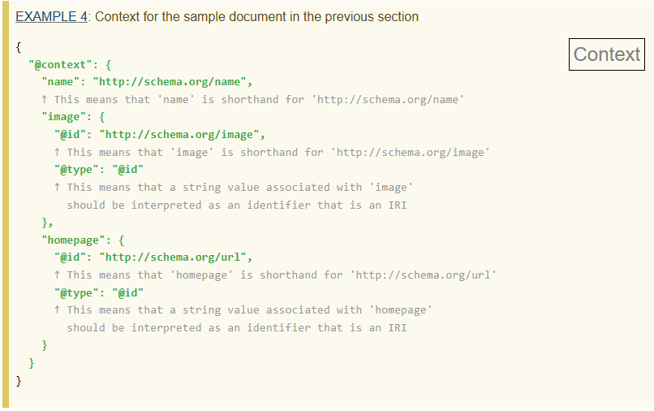
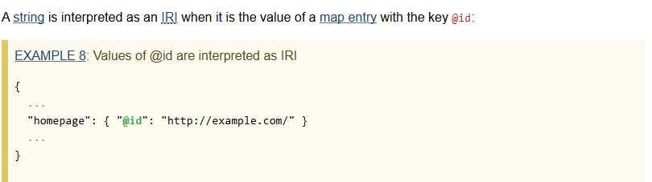
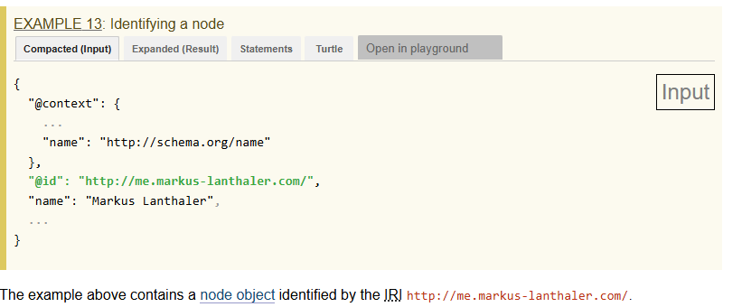

In real life, when you talk to someone (especially a close friend), you're actively collecting data on the subject of your conversation. Sometimes, you may not always use the formal word to describe a subject. Rather, you might use a nickname or a slang word instead to "shorthand" it. JSON-LD has something similar to that, called Context, which "...allows two applications to use shortcut terms to communicate with one another more efficiently, but without losing accuracy" (W3C, 2020).The example in the image below provides what context may look like in JSON-LD.

Another important aspect of JSON-LD is the IRI, which stands for Internationalized Resource Identifier. An IRI is a unique identifier that can be used to identify a resource on the web. It often gets mixed up with URL, but the terms are not interchangeable! IRI's identify a resource, while URL's locate a resource. The example in the image below provides what an IRI may look like in JSON-LD.

If you've taken Computer Science II already, you may have heard of Linked Lists. If not, Linked Lists are a data structure that consists of nodes that are linked together. To put it simply, it's a special kind of array, but moving elements (called nodes) around is easier. When handling data, maintaining organization is very important. JSON-LD has their own version of nodes, and to maintain organization, it's also important that they're identified with IRI's. This is called Node Identifiers, and the example in the image below provides what Node Identifiers may look like in JSON-LD.
